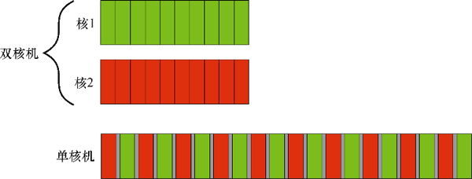
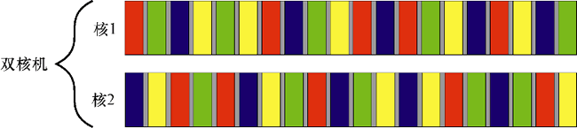
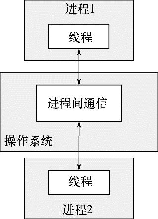
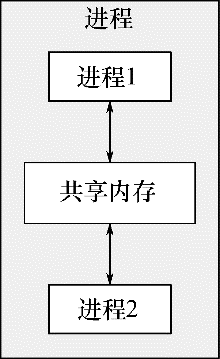

首页 > 编程笔记
什么是并发（非常详细）
按最简单、最基本的程度理解，并发（concurrency）是两个或多个同时独立进行的活动。并发现象遍布日常生活，我们可以边走路边说话，左右手同时做出不一样的动作，诸如此类。
多年来，多任务操作系统可以凭借任务切换，让同一台计算机同时运行多个应用软件，这早已稀松平常，而高端服务器配备了多处理器，实现了“真并发”（genuine concurrency）。
大势所趋，主流计算机现已能够真真正正地并行处理多任务，而不再只是制造并发的表象。
很久之前，大多计算机都仅有一个处理器，处理器内只有单一处理单元或单个内核，许多台式计算机至今依旧如此。这种计算机在同一时刻实质上只能处理一个任务，不过，每秒内，它可以在各个任务之间多次切换，先处理某任务的一小部分，接着切换任务，同样只处理一小部分，然后对其他任务如法炮制。
看起来所有任务都正在同时执行，因此其被称为任务切换。至此，我们谈及的并发都基于这种模式。由于任务飞速切换，我们难以分辨处理器到底在哪一刻暂停某个任务而切换到另一个。任务切换对使用者和应用软件自身都制造出并发的表象。
由于是表象，因此对比真正的并发环境，当应用程序在进行任务切换的单一处理器环境下运行时，其行为可能稍微不同。具体而言，如果就内存模型做出不当假设，本来会导致某些问题，但这些问题在上述环境中却有可能不会出现。
多年来，配备了多处理器的计算机一直被用作服务器，它要承担高性能的计算任务；现今，基于一芯多核处理器（简称多核处理器）的计算机日渐普及，多核处理器也用在台式计算机上。
无论是装配多个处理器，还是单个多核处理器，或是多个多核处理器，这些计算机都能真正并行运作多个任务，我们称之为硬件并发（hardware concurrency）。
图 1 所示为理想化的情景：
计算机有两个任务要处理，将它们进行十等分。在双核机（具有两个处理核）上，两个任务在各自的核上分别执行。另一台单核机则切换任务，交替执行任务小段，但任务小段之间略有间隔。
图 1 中，单核机的任务小段被灰色小条隔开，它们比双核机的分隔条粗大。为了交替执行，每当系统从某一个任务切换到另一个时，就必须完成一次上下文切换（context switch），于是耗费了时间。若要完成一次上下文切换，则操作系统需保存当前任务的 CPU 状态和指令指针，判定需要切换到哪个任务，并为之重新加载 CPU 状态。接着，CPU 有可能需要将新任务的指令和数据从内存加载到缓存，这或许会妨碍 CPU，令其无法执行任何指令，加剧延迟。
尽管多处理器或多核系统明显更适合硬件并发，不过有些处理器也能在单核上执行多线程。真正需要注意的关键因素是硬件支持的线程数（hardware threads），也就是硬件自身真正支持同时运行的独立任务的数量。
即便是真正支持硬件并发的系统，任务的数量往往容易超过硬件本身可以并行处理的数量，因而在这种情形下任务切换依然有用。譬如，常见的台式计算机能够同时运行数百个任务，在后台进行各种操作，表面上却处于空闲状态。正是由于任务切换，后台任务才得以运作，才容许我们运行许多应用软件，如文字处理软件、编译器、编辑软件，以及浏览器等。
图 2 展示了双核机上 4 个任务的相互切换，这同样是理想化的情形，各个任务都被均匀切分。实践中，许多问题会导致任务切分不均匀或调度不规则。
现在，如果安排两位开发者共处一室，他们就能畅谈软件项目的设计，也便于在纸上或壁板上作图，从而有助于交流设计的创意和理念。这样，仅有一间办公室要管理，并且各种资源通常只需一份就足够了。但缺点是，他们恐怕难以集中精神，共享资源也可能出现问题。
这两种安排开发者的办法示意了并发的两种基本方式：
我们可以随意组合这两种方式，掌控多个进程，其中有些进程包含多线程，有些进程只包含单一线程，但基本原理相同。接着，我们来简略看看应用软件中的这两种并发方式。
这种进程间通信普遍存在短处：或设置复杂，或速度慢，甚至二者兼有，因为操作系统往往要在进程之间提供大量防护措施，以免某进程意外改动另一个进程的数据；还有一个短处是运行多个进程的固定开销大，进程的启动花费时间，操作系统必须调配内部资源来管控进程，等等。
进程间通信并非一无是处：通常，操作系统在进程间提供额外保护和高级通信机制。这就意味着，比起线程，采用进程更容易编写出安全的并发代码。某些编程环境以进程作为基本构建单元，其并发效果确实一流，譬如为 Erlang 编程语言准备的环境。
运用独立的进程实现并发，还有一个额外优势——通过网络连接，独立的进程能够在不同的计算机上运行。这样做虽然增加了通信开销，可是只要系统设计精良，此法足以低廉而有效地增强并发力度，改进性能。
不过，同一进程内的所有线程都共用相同的地址空间，且所有线程都能直接访问大部分数据。全局变量依然全局可见，指向对象或数据的指针和引用能在线程间传递。
尽管进程间共享内存通常可行，但这种做法设置复杂，往往难以驾驭，原因是同一数据的地址在不同进程中不一定相同。图 4 展示了单一进程内的两个线程借共享内存通信。
我们可以启用多个单线程的进程并在进程间通信，也可以在单一进程内发动多个线程而在线程间通信，后者的额外开销更低。因此，即使共享内存带来隐患，主流语言大都青睐以多线程的方式实现并发功能。
提到多线程代码，还常常用到一个词——并行。接下来，我们来厘清并发与并行的区别。
并发和并行的差别甚小，主要是着眼点和使用意图不同。两个术语都是指使用可调配的硬件资源同时运行多个任务，但并行更强调性能。当人们谈及并行时，主要关心的是利用可调配的硬件资源提升大规模数据处理的性能；当谈及并发时，主要关心的是分离关注点或响应能力。
并发技术可以用于隔离不同领域的操作，即便这些不同领域的操作需同时进行；若不直接使用并发技术，我们将不得不编写框架做任务切换，或者不得不在某个操作步骤中，频繁调用无关领域的代码。
考虑一个带有用户界面的应用软件，需要由 CPU 密集处理，如台式计算机上的 DVD 播放软件。本质上，这个应用软件肩负两大职责：既要从碟片读取数据，解码声音影像，并将其及时传送给图形硬件和音效硬件，让 DVD 顺畅放映，又要接收用户的操作输入，譬如用户按“暂停”、“返回选项单”、“退出”等键。假若采取单一线程，则该应用软件在播放过程中，不得不定时检查用户输入，结果会混杂播放 DVD 的代码与用户界面的代码。
改用多线程就可以分离上述两个关注点，一个线程只负责用户界面管理，另一个线程只负责播放 DVD，用户界面的代码和播放 DVD 的代码遂可避免紧密纠缠。两个线程之间还会保留必要的交互，例如按“暂停”键，不过这些交互仅仅与需要立即处理的事件直接关联。
如果用户发送了操作请求，而播放 DVD 线程正忙，无法马上处理，那么在请求被传送到该线程的同时，代码通常能令用户界面线程立刻做出响应，即便只是显示光标或提示“请稍候”。这种方法使得应用软件看起来响应及时。类似地，某些必须在后台持续工作的任务，则常常交由独立线程负责运行，例如，让桌面搜索应用软件监控文件系统变动。此法基本能大幅简化各线程的内部逻辑，原因是线程间交互得以限定于代码中可明确辨识的切入点，而无须将不同任务的逻辑交错散置。
这样，线程的实际数量便与 CPU 既有的内核数量无关，因为用线程分离关注点的依据是设计理念，不以增加运算吞吐量为目的。
不断增强的算力并非得益于单个任务的加速运行，而是来自多任务并行运作。从前，处理器更新换代，程序自然而然随之加速，程序员可以“坐享其成，不劳而获”。但现在，正如 Herb Sutter 指出的“免费午餐没有了!”，软件若要利用增强的这部分算力，就必须设计成并发运行任务。所以程序员必须警觉，特别是那些踌躇不前、忽视并发技术的同业，有必要注意熟练掌握并发技术，储备技能。
增强性能的并行方式有两种，分别是任务并行和数据并行。
第一种，最直观地，将单一任务分解成多个部分，各自并行运作，从而节省总运行耗时。此方式即为任务并行。尽管听起来浅白、直接，但这却有可能涉及相当复杂的处理过程，因为任务各部分之间也许存在纷繁的依赖。任务分解可以针对处理过程，调度某线程运行同一算法的某部分，另一线程则运行其他部分；也可以针对数据，线程分别对数据的不同部分执行同样的操作，这被称为数据并行。
易于采用上述并行方式的算法常常被称为尴尬并行算法。其含义是，将算法的代码并行化实在简单，甚至简单得会让我们尴尬，实际上这是好事。我还遇见过用其他术语描述这类算法，叫“天然并行”（naturally parallel）与“方便并发”（conveniently concurrent）。尴尬并行算法具备的优良特性是可按规模伸缩——只要硬件支持的线程数目增加，算法的并行程度就能相应提升。这种算法是成语“众擎易举”的完美体现。算法中除尴尬并行以外的部分，可以另外划分成一类，其并行任务的数目固定（所以不可按规模伸缩）。
第二种增强性能的并行方式是利用并行资源解决规模更大的问题。
例如，只要条件适合，便同时处理 2 个文件，或者 10 个，甚至 20 个，而不是每次 1 个。同时对多组数据执行一样的操作，实际上是采用了数据并行，其着眼点有别于任务并行。采用这种方式处理单一数据所需的时间依旧不变，而同等时间内能处理的数据相对更多。这种方式明显存在局限，虽然并非任何情形都会因此受益，但数据吞吐量却有所增加，进而带来突破。例如，若能并行处理视频影像中不同的区域，就会提升视频处理的解析度。
计算机系统中的并发
若我们谈及计算机系统中的并发，则是指同一个系统中，多个独立活动同时进行，而非依次进行。多年来，多任务操作系统可以凭借任务切换，让同一台计算机同时运行多个应用软件，这早已稀松平常，而高端服务器配备了多处理器，实现了“真并发”（genuine concurrency）。
大势所趋，主流计算机现已能够真真正正地并行处理多任务，而不再只是制造并发的表象。
很久之前，大多计算机都仅有一个处理器，处理器内只有单一处理单元或单个内核，许多台式计算机至今依旧如此。这种计算机在同一时刻实质上只能处理一个任务，不过，每秒内，它可以在各个任务之间多次切换，先处理某任务的一小部分，接着切换任务，同样只处理一小部分，然后对其他任务如法炮制。
看起来所有任务都正在同时执行，因此其被称为任务切换。至此，我们谈及的并发都基于这种模式。由于任务飞速切换，我们难以分辨处理器到底在哪一刻暂停某个任务而切换到另一个。任务切换对使用者和应用软件自身都制造出并发的表象。
由于是表象，因此对比真正的并发环境，当应用程序在进行任务切换的单一处理器环境下运行时，其行为可能稍微不同。具体而言，如果就内存模型做出不当假设，本来会导致某些问题，但这些问题在上述环境中却有可能不会出现。
多年来，配备了多处理器的计算机一直被用作服务器，它要承担高性能的计算任务；现今，基于一芯多核处理器（简称多核处理器）的计算机日渐普及，多核处理器也用在台式计算机上。
无论是装配多个处理器，还是单个多核处理器，或是多个多核处理器，这些计算机都能真正并行运作多个任务，我们称之为硬件并发（hardware concurrency）。
图 1 所示为理想化的情景：

图 1 两种并发方式：双核机上的并发执行与单核机上的任务切换
图 1 两种并发方式：双核机上的并发执行与单核机上的任务切换
计算机有两个任务要处理，将它们进行十等分。在双核机（具有两个处理核）上，两个任务在各自的核上分别执行。另一台单核机则切换任务，交替执行任务小段，但任务小段之间略有间隔。
图 1 中，单核机的任务小段被灰色小条隔开，它们比双核机的分隔条粗大。为了交替执行，每当系统从某一个任务切换到另一个时，就必须完成一次上下文切换（context switch），于是耗费了时间。若要完成一次上下文切换，则操作系统需保存当前任务的 CPU 状态和指令指针，判定需要切换到哪个任务，并为之重新加载 CPU 状态。接着，CPU 有可能需要将新任务的指令和数据从内存加载到缓存，这或许会妨碍 CPU，令其无法执行任何指令，加剧延迟。
尽管多处理器或多核系统明显更适合硬件并发，不过有些处理器也能在单核上执行多线程。真正需要注意的关键因素是硬件支持的线程数（hardware threads），也就是硬件自身真正支持同时运行的独立任务的数量。
即便是真正支持硬件并发的系统，任务的数量往往容易超过硬件本身可以并行处理的数量，因而在这种情形下任务切换依然有用。譬如，常见的台式计算机能够同时运行数百个任务，在后台进行各种操作，表面上却处于空闲状态。正是由于任务切换，后台任务才得以运作，才容许我们运行许多应用软件，如文字处理软件、编译器、编辑软件，以及浏览器等。

图 2 4个任务在双核机上切换
图 2 4个任务在双核机上切换
图 2 展示了双核机上 4 个任务的相互切换，这同样是理想化的情形，各个任务都被均匀切分。实践中，许多问题会导致任务切分不均匀或调度不规则。
并发的方式
设想两位开发者要共同开发一个软件项目。假设他们处于两间独立的办公室，而且各有一份参考手册，则他们可以静心工作，不会彼此干扰。但这令交流颇费周章：他们无法一转身就与对方交谈，遂不得不借助电话或邮件，或是需起身离座走到对方办公室。另外，使用两间办公室有额外开支，还需购买多份参考手册。现在，如果安排两位开发者共处一室，他们就能畅谈软件项目的设计，也便于在纸上或壁板上作图，从而有助于交流设计的创意和理念。这样，仅有一间办公室要管理，并且各种资源通常只需一份就足够了。但缺点是，他们恐怕难以集中精神，共享资源也可能出现问题。
这两种安排开发者的办法示意了并发的两种基本方式：
- 一位开发者代表一个线程，一间办公室代表一个进程。第一种方式采用多个进程，各进程都只含单一线程，情况类似于每位开发者都有自己的办公室；
- 第二种方式只运行单一进程，内含多个线程，正如两位开发者同处一间办公室。
我们可以随意组合这两种方式，掌控多个进程，其中有些进程包含多线程，有些进程只包含单一线程，但基本原理相同。接着，我们来简略看看应用软件中的这两种并发方式。
多进程并发
在应用软件内部，一种并发方式是，将一个应用软件拆分成多个独立进程同时运行，它们都只含单一线程，非常类似于同时运行浏览器和文字处理软件。这些独立进程可以通过所有常规的进程间通信途径相互传递信息（信号、套接字、文件、管道等），如图 3 所示。

图 3 两个进程并发运行并相互通信
图 3 两个进程并发运行并相互通信
这种进程间通信普遍存在短处：或设置复杂，或速度慢，甚至二者兼有，因为操作系统往往要在进程之间提供大量防护措施，以免某进程意外改动另一个进程的数据；还有一个短处是运行多个进程的固定开销大，进程的启动花费时间，操作系统必须调配内部资源来管控进程，等等。
进程间通信并非一无是处：通常，操作系统在进程间提供额外保护和高级通信机制。这就意味着，比起线程，采用进程更容易编写出安全的并发代码。某些编程环境以进程作为基本构建单元，其并发效果确实一流，譬如为 Erlang 编程语言准备的环境。
运用独立的进程实现并发，还有一个额外优势——通过网络连接，独立的进程能够在不同的计算机上运行。这样做虽然增加了通信开销，可是只要系统设计精良，此法足以低廉而有效地增强并发力度，改进性能。
多线程并发
另一种并发方式是在单一进程内运行多线程。线程非常像轻量级进程，每个线程都独立运行，并能各自执行不同的指令序列。不过，同一进程内的所有线程都共用相同的地址空间，且所有线程都能直接访问大部分数据。全局变量依然全局可见，指向对象或数据的指针和引用能在线程间传递。
尽管进程间共享内存通常可行，但这种做法设置复杂，往往难以驾驭，原因是同一数据的地址在不同进程中不一定相同。图 4 展示了单一进程内的两个线程借共享内存通信。

图 4 单一进程内的两个线程借共享内存通信
图 4 单一进程内的两个线程借共享内存通信
我们可以启用多个单线程的进程并在进程间通信，也可以在单一进程内发动多个线程而在线程间通信，后者的额外开销更低。因此，即使共享内存带来隐患，主流语言大都青睐以多线程的方式实现并发功能。
提到多线程代码，还常常用到一个词——并行。接下来，我们来厘清并发与并行的区别。
并发与并行
就多线程代码而言，并发与并行（parallel）的含义很大程度上相互重叠。确实，在多数人看来，它们就是相同的。并发和并行的差别甚小，主要是着眼点和使用意图不同。两个术语都是指使用可调配的硬件资源同时运行多个任务，但并行更强调性能。当人们谈及并行时，主要关心的是利用可调配的硬件资源提升大规模数据处理的性能；当谈及并发时，主要关心的是分离关注点或响应能力。
为分离关注点而并发
一直以来，编写软件时，分离关注点（separation of concerns）几乎总是不错的构思：归类相关代码，隔离无关代码，使程序更易于理解和测试，因此所含缺陷很可能更少。并发技术可以用于隔离不同领域的操作，即便这些不同领域的操作需同时进行；若不直接使用并发技术，我们将不得不编写框架做任务切换，或者不得不在某个操作步骤中，频繁调用无关领域的代码。
考虑一个带有用户界面的应用软件，需要由 CPU 密集处理，如台式计算机上的 DVD 播放软件。本质上，这个应用软件肩负两大职责：既要从碟片读取数据，解码声音影像，并将其及时传送给图形硬件和音效硬件，让 DVD 顺畅放映，又要接收用户的操作输入，譬如用户按“暂停”、“返回选项单”、“退出”等键。假若采取单一线程，则该应用软件在播放过程中，不得不定时检查用户输入，结果会混杂播放 DVD 的代码与用户界面的代码。
改用多线程就可以分离上述两个关注点，一个线程只负责用户界面管理，另一个线程只负责播放 DVD，用户界面的代码和播放 DVD 的代码遂可避免紧密纠缠。两个线程之间还会保留必要的交互，例如按“暂停”键，不过这些交互仅仅与需要立即处理的事件直接关联。
如果用户发送了操作请求，而播放 DVD 线程正忙，无法马上处理，那么在请求被传送到该线程的同时，代码通常能令用户界面线程立刻做出响应，即便只是显示光标或提示“请稍候”。这种方法使得应用软件看起来响应及时。类似地，某些必须在后台持续工作的任务，则常常交由独立线程负责运行，例如，让桌面搜索应用软件监控文件系统变动。此法基本能大幅简化各线程的内部逻辑，原因是线程间交互得以限定于代码中可明确辨识的切入点，而无须将不同任务的逻辑交错散置。
这样，线程的实际数量便与 CPU 既有的内核数量无关，因为用线程分离关注点的依据是设计理念，不以增加运算吞吐量为目的。
为性能而并行：任务并行和数据并行
多处理器系统已存在数十年，不过一直以来它们大都只见于巨型计算机、大型计算机和大型服务器系统。但是，芯片厂家日益倾向设计多核芯片，在单一芯片上集成 2 个、4 个、16 个或更多处理器，从而使其性能优于单核芯片。于是，多核台式计算机日渐流行，甚至多核嵌入式设备亦然。不断增强的算力并非得益于单个任务的加速运行，而是来自多任务并行运作。从前，处理器更新换代，程序自然而然随之加速，程序员可以“坐享其成，不劳而获”。但现在，正如 Herb Sutter 指出的“免费午餐没有了!”，软件若要利用增强的这部分算力，就必须设计成并发运行任务。所以程序员必须警觉，特别是那些踌躇不前、忽视并发技术的同业，有必要注意熟练掌握并发技术，储备技能。
增强性能的并行方式有两种，分别是任务并行和数据并行。
第一种，最直观地，将单一任务分解成多个部分，各自并行运作，从而节省总运行耗时。此方式即为任务并行。尽管听起来浅白、直接，但这却有可能涉及相当复杂的处理过程，因为任务各部分之间也许存在纷繁的依赖。任务分解可以针对处理过程，调度某线程运行同一算法的某部分，另一线程则运行其他部分；也可以针对数据，线程分别对数据的不同部分执行同样的操作，这被称为数据并行。
易于采用上述并行方式的算法常常被称为尴尬并行算法。其含义是，将算法的代码并行化实在简单，甚至简单得会让我们尴尬，实际上这是好事。我还遇见过用其他术语描述这类算法，叫“天然并行”（naturally parallel）与“方便并发”（conveniently concurrent）。尴尬并行算法具备的优良特性是可按规模伸缩——只要硬件支持的线程数目增加，算法的并行程度就能相应提升。这种算法是成语“众擎易举”的完美体现。算法中除尴尬并行以外的部分，可以另外划分成一类，其并行任务的数目固定（所以不可按规模伸缩）。
第二种增强性能的并行方式是利用并行资源解决规模更大的问题。
例如，只要条件适合，便同时处理 2 个文件，或者 10 个，甚至 20 个，而不是每次 1 个。同时对多组数据执行一样的操作，实际上是采用了数据并行，其着眼点有别于任务并行。采用这种方式处理单一数据所需的时间依旧不变，而同等时间内能处理的数据相对更多。这种方式明显存在局限，虽然并非任何情形都会因此受益，但数据吞吐量却有所增加，进而带来突破。例如，若能并行处理视频影像中不同的区域，就会提升视频处理的解析度。
关注公众号「站长严长生」，在手机上阅读所有教程，随时随地都能学习。内含一款搜索神器，免费下载全网书籍和视频。

微信扫码关注公众号